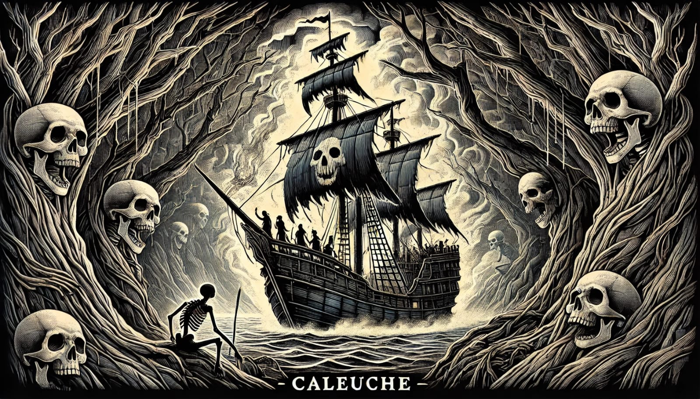

El Caleuche es un barco fantasma que surca las aguas del sur de Chile, especialmente alrededor del archipiélago de Chiloé. La embarcación aparece cubierta de luces brillantes y puede navegar con una rapidez sobrenatural, incluso contra el viento. Según la leyenda, el Caleuche es tripulado por brujos y almas de los muertos que fueron elegidos para formar parte de su tripulación. Quienes lo ven de cerca afirman escuchar risas y música provenientes de su interior. Se cree que aquellos que trabajan con los brujos o les venden su alma pueden obtener riquezas, pero si alguien delata la existencia del Caleuche, enfrentará terribles castigos.